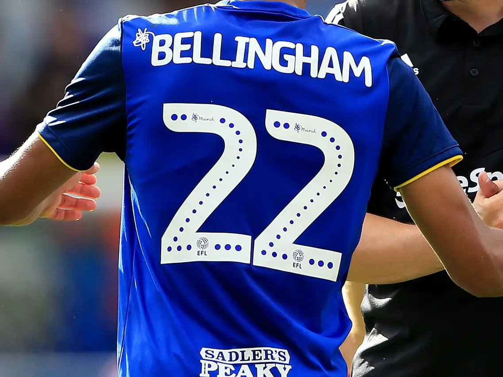
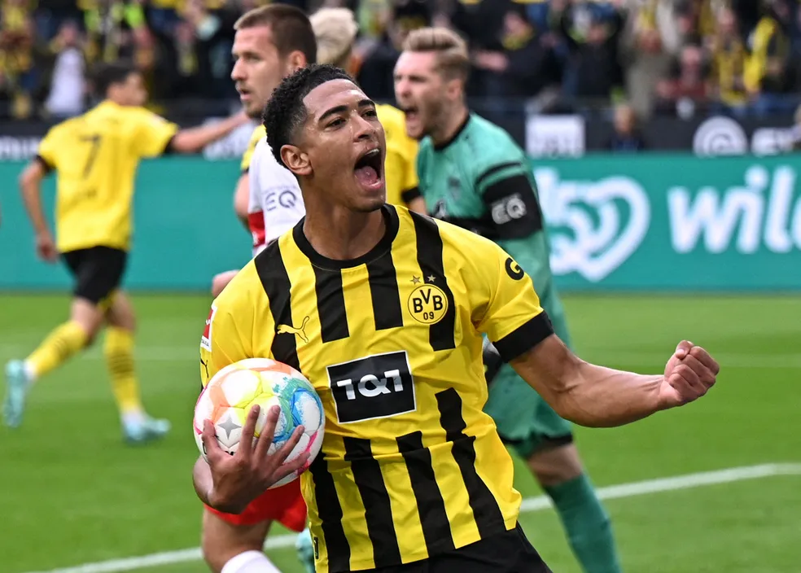
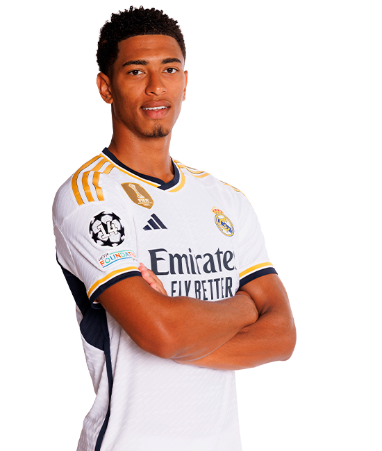
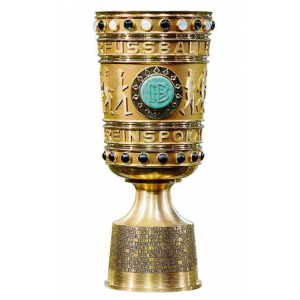
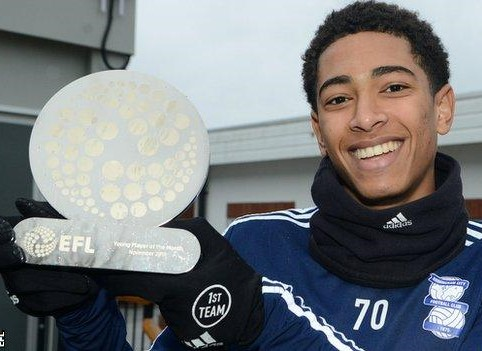
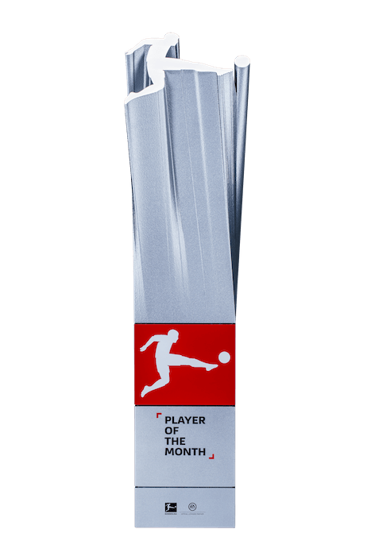
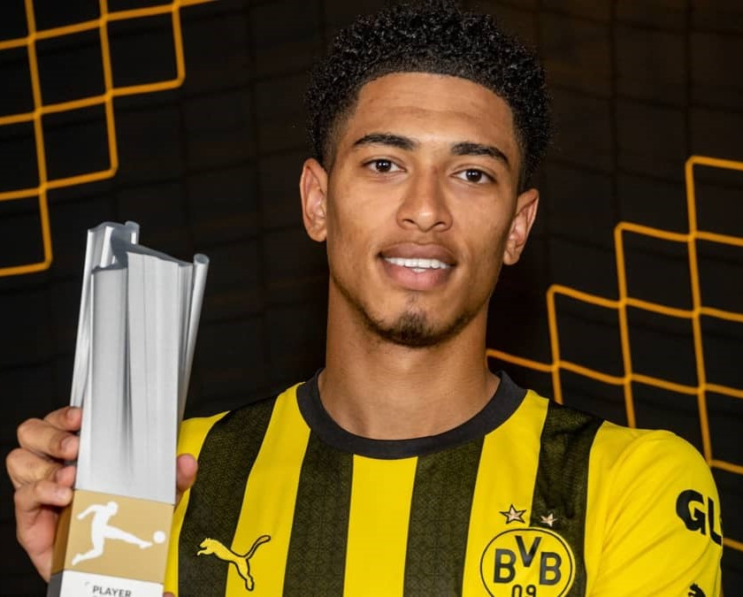
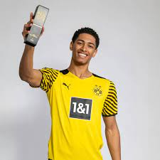
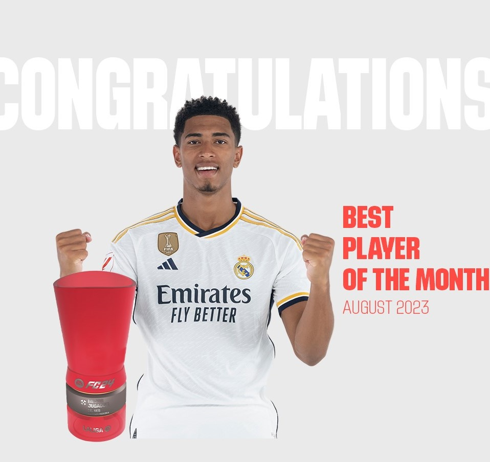
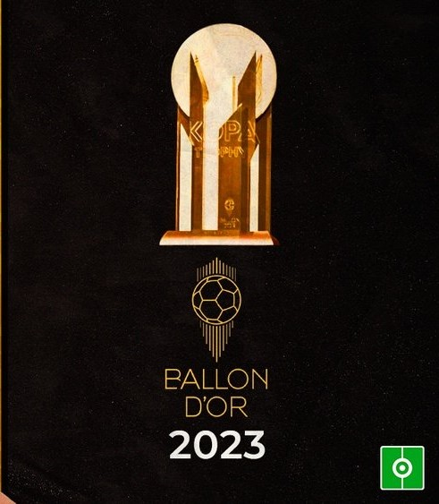

Início da Carreira
Sua trajetória se iniciou no sub-8 no Birmingham City, onde aos 14 anos de idade estreou no time sub-18 além de passar pelas seleções de base da Inglaterra.
Nesse mesmo clube fez a estreia profissional.
Ele foi tão importante ao clube devido ao retorno financeiro, que teve sua camisa 22 aposentada na história do Birmingham
Borussia Dortmund
O jogador foi vendido por 23 milhões de euros (R$ 136 milhões) ao clube alemão, o qual jogou 132 jogos e marcou 24 gols, sendo uma peça fundamental no clube.
Real Madrid
Em 2023, o gigante espanhol contrata o meio campista Jude Bellingham por 103 milhões de euros (R$ 543 milhões), em negociação com o Borussia Dortmund.
Em poucos jogos já se tornou um querido pela torcida devido a um alto número de gols e assistências que vêm crescendo a cada jogo, Jude é um jogador fenomenal e a esperança do futuro do Real Madrid.
Compilação das melhores jogadas do Bellingham
Títulos
-

- Copa da Alemanha: 20/21
Principais Prêmios Individuais
- 
Jovem Jogador do Mês da EFL: Novembro de 2019 - 
Melhor Jogador do Mês da Bundesliga: Set/20 - 
Melhor jogador da Bundesliga: 2022–23 - 
Melhor Jogador Jovem Sub-20 do Mundo: 2022 - 
Jogador do mês da La Liga: Agosto/23 - 
Troféu Kopa: 2023